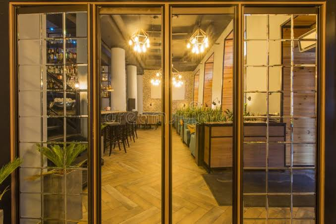

Tortilla de Patatas
El clásico de nuestra carta, con patata y cebolla confitada.
Cocina de siempre, a mano de los mejores chefs

Llevamos más de veinte años sirviendo comida casera en el mismo barrio. En esta web queremos compartir contigo algunas de las recetas de nuestra carta, para que también puedas prepararlas en casa.
El clásico de nuestra carta, con patata y cebolla confitada.
Sopa fría de tomate, perfecta para los días de calor.
Arroz con pollo, conejo y verduras, cocinado en paellera.